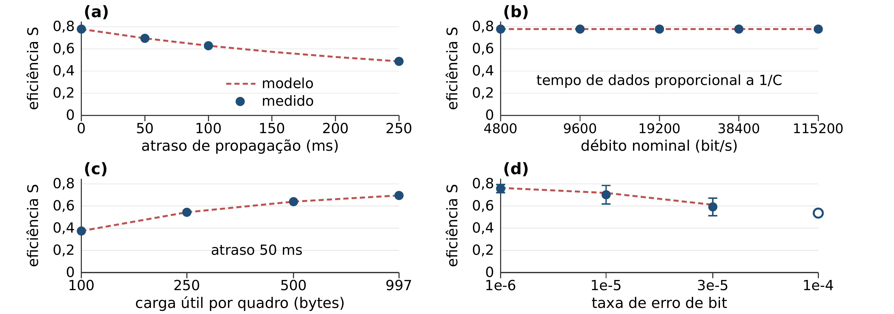

L.EIC · Turma 3 · Redes de Computadores 2026/2027 · Faculdade de Engenharia da Universidade do Porto
Caracterizámos a eficiência do protocolo de ligação Stop-and-Wait do primeiro trabalho laboratorial em 45 transferências de um ficheiro de 10 968 bytes por uma ligação série emulada, variando por ensaio a taxa de erro de bit, o atraso de propagação, o débito nominal e o tamanho do quadro. Sem erros, a eficiência S = R/C vale 0,7786, valor determinado pelo enquadramento e pela codificação 8N1. A eficiência não varia com o débito e decresce com o atraso ao ritmo de duas travessias por cada um dos 14 quadros de informação. O modelo de utilização para janela unitária descreve o efeito do atraso com erro inferior a 0,3 %. Com BER 10−4, duas de três transferências esgotaram o orçamento de quatro tentativas por quadro.
A camada de ligação implementada transporta quadros delimitados por 0x7E, com BCC1 = A ⊕ C no cabeçalho e BCC2 como XOR do campo de dados. O stuffing de 0x7E e 0x7D garante transparência. O controlo de fluxo é Stop-and-Wait com numeração módulo 2, confirmações RR/REJ e retransmissão temporizada. A camada de aplicação divide o ficheiro em pacotes START, DATA e END, com metadados em TLV.
A janela unitária obriga o transmissor a aguardar uma ida-e-volta por quadro, o que liga o desempenho ao atraso de propagação. Medimos a eficiência S = R/C, com R o débito útil em bit/s e C o débito nominal, em função de quatro parâmetros, e comparámos os resultados com os modelos de ARQ.
Fixámos os parâmetros do programa fornecido: quatro tentativas por quadro, TIMEOUT = 4 s e carga útil máxima de 1000 bytes. O ficheiro penguin.gif ocupa 10 968 bytes e segue em 14 quadros de informação, 12 DATA, um START e um END, que transportam 11 048 bytes de carga útil. A configuração base usa 9600 bit/s, BER nula, atraso nulo e 997 bytes por pacote. Cada configuração foi repetida três vezes.
Os ensaios correram em Linux com gcc e socat sobre o emulador de cabo fornecido. Confirmámos cada comando do cabo no registo antes do seguinte e verificámos a configuração aplicada em todas as execuções. A cópia do emulador recebeu semente distinta por processo, para que as repetições não partilhassem a sequência pseudoaleatória.
A janela de medição começa antes do envio de START e termina quando o envio de END fica confirmado, excluindo a abertura, o fecho e a espera final do temporizador. Uma transferência conta como bem-sucedida quando o ficheiro recebido é idêntico ao original byte a byte e o recetor confirma a conclusão. A instrumentação correu numa cópia temporária do código-fonte, sem alterar quadros, temporizadores nem pacotes.
O modelo de utilização de Stop-and-Wait sem erros relaciona a fração de tempo útil com a razão entre atraso e transmissão da carga útil de um quadro:
onde tI = 8L/C é o tempo de transmissão da carga útil de um quadro de L bytes. Com probabilidade de erro de quadro p e sem limite de retransmissões, o modelo passa a U = (1 − p)/(1 + 2a). Ambos assumem quadros uniformes e confirmações de duração nula.
Para a implementação usámos um segundo modelo, que separa serialização e propagação:
Nfio conta os bytes escritos na ligação, incluindo quadros, confirmações e stuffing; NI é o número de quadros de informação; Nf são os bytes do ficheiro; e o fator 10 corresponde aos bits por byte de 8N1.
Com 997 bytes de carga, Nfio = 11 202 bytes, dos quais 11 132 de quadros de informação e 70 de 14 confirmações. O stuffing acrescenta 68 bytes. A eficiência de enquadramento vale 10 968/11 270 = 0,9732, donde S = 0,8 × 0,9732 = 0,7786. Medimos 0,77856 ± 0,00001. Os 6 bytes de cabeçalho e cauda por quadro, os 5 bytes por confirmação e a codificação 8N1 fixam este limite superior.
O ajuste aos quatro pontos de atraso dá T = T0 + 28,02 Tprop, ou seja, 14 ciclos de ida-e-volta com duas travessias cada, valor coerente com os 14 quadros de informação. O modelo (2) reproduz os tempos com desvio inferior a 0,05 %. O modelo (1), com η = 0,7786, aproxima os mesmos pontos com desvio inferior a 0,3 %. A diferença corresponde ao tempo de transmissão das confirmações e do stuffing, que o modelo (1) despreza. Esse tempo é fixo, pelo que o seu peso no ciclo diminui à medida que o atraso cresce.
A eficiência mantém-se em 0,7786 entre 4800 e 38 400 bit/s e em 0,7785 a 115 200 bit/s, enquanto o tempo de dados cai de 23,4792 s para 0,9784 s. Em cada débito, a diferença entre o tempo medido e 10 Nfio/C corresponde aos mesmos 68 bytes serializados. A sobrecarga é fixa em bytes e o aumento de débito não altera S.
Com 50 ms de atraso, S sobe de 0,3750 com quadros de 100 bytes para 0,6953 com 997 bytes. O número de ciclos cai de 112 para 14 e o custo de propagação desce de 11,2 s para 1,4 s. O modelo (1) perde precisão neste estudo, com desvio que atinge 5,6 % a 100 bytes, porque as confirmações passam a ocupar 4,4 % dos bytes no fio. Entre 500 e 997 bytes o ganho reduz-se a 0,0558; o máximo de 1000 bytes imposto pela camada de ligação limita o resto.
As retransmissões sobem de 0 para 5 com a BER e S cai de 0,7786 para 0,5365. A expressão com erros aproxima os três primeiros pontos com desvio entre 2 % e 3 %. O desvio cresce com p porque o modelo ignora a corrupção das confirmações e o TIMEOUT = 4 s que se segue a um REJ perdido. Com BER 10−4 só uma de três transferências concluiu: um quadro de 1006 bytes tem p = 0,553, a probabilidade de esgotar quatro tentativas é p4 = 0,093 e a de pelo menos um dos 14 quadros falhar é 1 − (1 − 0,093)14 ≈ 0,25. Para esse comprimento, as quatro taxas ensaiadas correspondem a FER de 0,8 %, 7,7 %, 21,5 % e 55,3 %.

| Estudo | Configuração | NI | T (s) | R (bit/s) | S medido | S modelo |
|---|---|---|---|---|---|---|
| atraso | 0 ms | 14 | 11,7396 | 7 474 | 0,7786 | 0,7786 |
| 50 ms | 14 | 13,1458 | 6 675 | 0,6953 | 0,6956 | |
| 100 ms | 14 | 14,5458 | 6 032 | 0,6284 | 0,6286 | |
| 250 ms | 14 | 18,7458 | 4 681 | 0,4876 | 0,4878 | |
| débito | 4800 bit/s | 14 | 23,4792 | 3 737 | 0,7786 | 0,7786 |
| 115200 bit/s | 14 | 0,9784 | 89 678 | 0,7785 | 0,7786 | |
| quadro | 100 B | 112 | 24,3760 | 3 600 | 0,3750 | 0,3751 |
| 250 B | 46 | 16,8104 | 5 220 | 0,5437 | 0,5438 | |
| 997 B | 14 | 13,1458 | 6 675 | 0,6953 | 0,6956 | |
| BER | 10−6 | 14 | 12,0931 | 7 268 | 0,7571 | 0,7724 |
| 10−5 | 14 | 13,1510 | 6 738 | 0,7019 | 0,7184 | |
| 3×10−5 | 14 | 15,6236 | 5 687 | 0,5924 | 0,6116 | |
| 10−4* | 14 | 17,0375 | 5 150 | 0,5365 | — |
Na configuração base o protocolo atinge 0,7786 de eficiência. Esse valor decorre do enquadramento e da codificação 8N1, mantém-se constante com o débito, desce com o atraso ao ritmo de duas travessias por quadro e cresce com o tamanho do quadro até ao limite de enquadramento. O modelo (2) prevê os tempos com desvio inferior a 0,05 % nos três estudos determinísticos e isola o stuffing como único resíduo sistemático, com 68 bytes.
Os modelos de ARQ têm âmbitos distintos. O modelo (1) descreve o atraso com erro inferior a 0,3 %, mas perde precisão quando as confirmações deixam de ser desprezáveis, como sucede com quadros de 100 bytes. A expressão com erros subestima o custo entre 2 % e 3 %, por ignorar o temporizador de 4 s que se segue a uma confirmação perdida. A partir de BER 10−4 com quadros de 1000 bytes, quatro tentativas por quadro deixam de garantir uma transferência completa: concluiu uma de três.
Uma janela deslizante reduziria o custo de propagação de 28 travessias para poucas por transferência e tornaria a eficiência dependente da capacidade em vez do atraso. Um CRC de 16 ou 32 bits reduziria o erro residual face ao XOR, ao custo de mais bytes por quadro.